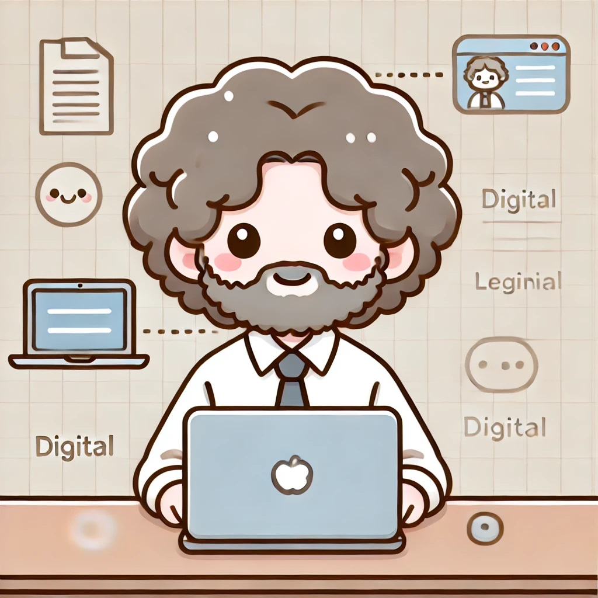

En este lugar podrás encontrar las aplicaciones realizadas para tu formación.
Modelo de Toulmin Simulador Persona en Crisis Prueba TIC, TAC, TEPS Sombreros para pensar Modelo Gunawardena Pensamientos Elementos del emprendimiento social Conceptos clave innovasión social Técnicas de Diseño de Análisis Volver